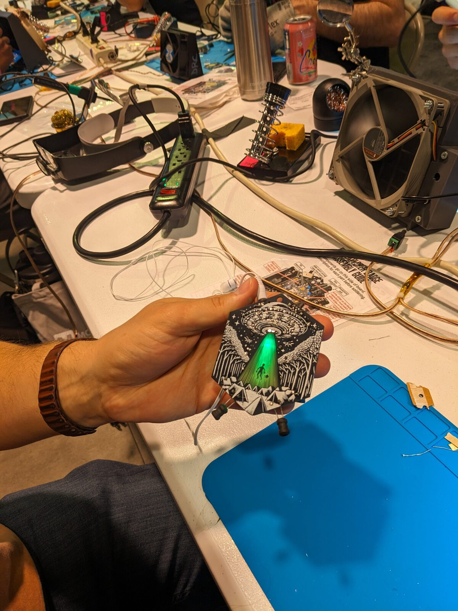

Gallery // In Action
What people are exploring



A taste of what the EMF Explorer Badge sounds like, an interactive way to explore frequencies in your browser, and the full illustrated zine.
Recordings of EMF Explorer picking up signals from everyday electronics and out in the field.
A growing playlist of EMF Explorer soundwalks - listening to real devices and environments out in the field.
Watch on YouTubePlug your EMF Explorer into your computer with a 3.5mm TRS to USB-C microphone input cable, then use the embedded app below to see the frequencies it's hearing in real time. Requires microphone access - your browser will prompt you to allow it.
If the embedded app doesn't load (some browsers block embedded microphone access), open it directly:
Launch Frequency MonitorThe EMF Explorer Zine is a hand-illustrated companion to the badge - covering the science, the build, and the world of signals worth exploring.
Open the ZineStep-by-step assembly instructions, soldering safety, and how the circuit works.
Open the Build Guide